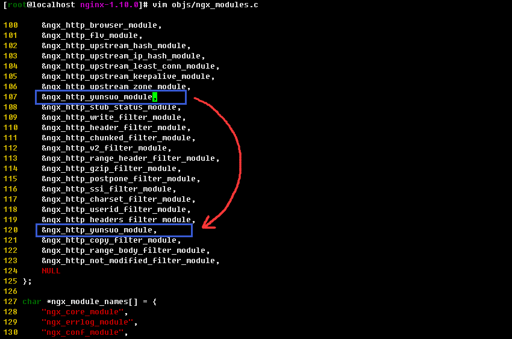
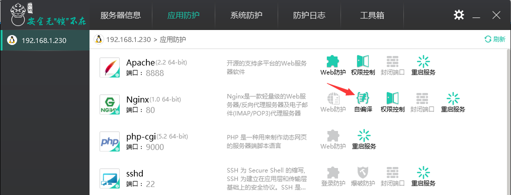

Nginx/Tengine 自编译说明
安装云锁的时候，云锁会自动适配nginx版本，使用我们已经预编译好的包含防护模块的nginx文件替换掉您当前系统中使用的nginx文件。卸载时，会将备份的系统原始nginx文件替换回来。因此，云锁可保护使用nginx搭建的网站，开创了这个领域的先河。
当nginx更新或用户的nginx添加（--add-moudel）了第三方模块时需要用户手工加载云锁的防护模块进行防护。通常在安装时云锁会提示存在第三方模块，且PC端也会有显示需要编译。


安装
建议：在安装防护模块前先重启一次Nginx的服务，确保业务重启后可以正常运行，然后再安装云锁防护模块。
编译前先将已经安装的Nginx文件进行备份，通过ps命令查看nginx文件的路径。以下所有步骤都以自身nginx路径为准。
# ps -elf | grep nginx
# cd /usr/local/nginx/sbin/ # cp nginx nginx.bak过步骤1查看的路径跟-v参数查看当前Nginx版本，如有源码包则忽略此步骤。无源码包则到Nginx官网下载Nginx源码包，源码包需与自己的当前Nginx版本匹配（假设当前Nginx版本为1.10）。宝塔面板Nginx源码路径：/www/server/nginx/src/；Oneinstack的Nginx源码路径在oneinstack目录下：oneinstack/src/。
# /usr/local/nginx/sbin/nginx -v
# wget http://nginx.org/download/nginx-1.10.1.tar.gz
解压nginx源码包
# tar zxvf nginx-1.10.1.tar.gz
由于其默认不支持post过滤，所以需要修改Nginx文件。1.8.0 版本以下修改源码目录下ngx_http_upstream.c文件（Nginx 1.8.0 及以上版本和Tengine跳过该步骤）。在
static void ngx_http_upstream_init_request(ngx_http_request_t \*r);行上方添加：int ngx_http_yunsuo_post_in_handler(ngx_http_request_t *r);和在ngx_http_upstream_init_request后，添加：if (ngx_http_yunsuo_post_in_handler(r)) { return; }# cd nginx-1.10.1/src/http/ # vi ngx_http_upstream.c--------------------下面这段是添加的---------------- int ngx_http_yunsuo_post_in_handler(ngx_http_request_t *r); -------------------------------------------------- static void ngx_http_upstream_init_request(ngx_http_request_t *r) { ngx_str_t *host; ngx_uint_t i; ngx_resolver_ctx_t *ctx, temp; ngx_http_cleanup_t *cln; ngx_http_upstream_t *u; ngx_http_core_loc_conf_t *clcf; ngx_http_upstream_srv_conf_t *uscf, **uscfp; ngx_http_upstream_main_conf_t *umcf; --------------------下面这段是添加的---------------- if (ngx_http_yunsuo_post_in_handler(r)) { return; } -------------------------------------------------- if (r->aio) { return; }
下载云锁防护模块压缩包
# cd /root/ # wget https://codeload.github.com/yunsuo-open/nginx-plugin/zip/master -O nginx-plugin-master.zip
解压云锁防护模块压缩包nginx-plugin-master.zip
# unzip nginx-plugin-master.zip
获取当前云锁模块所在目录的全路径
# cd nginx-plugin-master/ # pwd
查看当前nginx加载的模块，在编译加载云锁防护模块的时候仍需加载这些模块
# /usr/local/nginx/sbin/nginx –V
进入nginx源码目录，对nginx进行编译；编译时在第8步获取的nginx原有模块后添加云锁防护模块，模块路径为第7步获取的云锁防护模块源码全路径“/root/nginx-plugin-master”
# cd nginx-1.10.1/ # ./configure --prefix=/usr/local/nginx --with... --add-module=/root/nginx-plugin-master
Nginx1.8.0 以上和 Tengine 2.1.2 则需要修改objs/Makefile文件和objs/ngx_modules.c来支持post过滤和内容过滤。
首先，在Makefile文件中的
CFLAGS=...-Werror -g后追加宏定义-DHIGHERTHAN8# vi objs/Makefile CFLAGS = -pipe -O -W -Wall -Wpointer-arith -Wno-unused-parameter -Werror -g -DHIGHERTHAN8
其次，将ngx_modules.c中的
&ngx_http_yunsuo_module,向下移动到ngx_http_userid_filter_module和ngx_http_headers_filter_module之间。(已在此之间的则可忽略)# vi objs/ngx_modules.cngx_module_t *ngx_modules[] = { &ngx_core_module, ...... &ngx_http_upstream_keepalive_module, &ngx_http_upstream_zone_module, -----------下面这行向下移动---------------- &ngx_http_yunsuo_module, ------------------------------------------ &ngx_http_stub_status_module, ...... &ngx_http_headers_filter_module, ---------------移动到该位置----------------- &ngx_http_yunsuo_module, ------------------------------------------- &ngx_http_copy_filter_module, &ngx_http_range_body_filter_module, &ngx_http_not_modified_filter_module, NULL }; char *ngx_module_names[] = { "objs/ngx_modules.c" 186L, 6441C ...... };
configure完成后进行make（如原本无nginx，make后还需make install）
# make
make完成后将系统中原有的nginx用重新编译生成的nginx文件替换，替换后重启nginx使新编译nginx生效
# rm -rf /usr/local/nginx/sbin/nginx # cp objs/nginx /usr/local/nginx/sbin/ # service nginx restart
到此通过PC端连接到服务器端，在PC端的界面上可以看到已识别nginx插件。

卸载
使用nginx.bak文件替换掉自编译的nginx文件，替换后重启Nginx
# cd /usr/local/nginx/sbin/ # rm -rf nginx # mv nginx.bak nginx # service nginx restart删除文件
手动删除或者重命名
/usr/local/yunsuo_agent/nginx/目录下的libnginx_plugin.so（此操作需要关闭云锁自保护功能）， 重启nginx服务即可"service nginx restart"。
FAQ
什么情况下需要自己编译云锁的nginx模块？
1） 当您的nginx使用了第三方或者自己开发的模块的时候，需要编译云锁的nginx模块。您可以通过nginx -V命令查看输出的信息里是否包含了--add-module=的字样 (例如：--add-module=../ngx_cache_purge-1.3说明使用了ngx_cache_purge-1.3第三方模块)
2） 当使用tengine的时候，需要编译云锁的nginx模块
3） 当前使用的nginx版本比云锁适配的nginx版本高的时候，需要自己编译云锁的nginx模块
卸载云锁后nginx需要重新编译吗？
不需要，云锁的nginx模块会判断防护模块是否安装，如果不安装则不生效。当然您也可以替换回之前的nginx
编译时可能出现的几种错误解决方法
1）遇如下错误信息 ： cc1: all warnings being treated as errors， 编译器把 警告信息作为错误处理了 解决： 修改 objs/Makefile 把CFLAGS = -pipe -O -W -Wall -Wpointer-arith -Wno-unused-parameter -Werror -g修改为：CFLAGS = -pipe -O -W -Wall -Wpointer-arith -Wno-unused-parameter -g即去掉-Werror选项 重新 make， 注意是重新make 而不是重新 ./configure 2) 遇如下错误信息：undefined reference to `dlclose'，由于编译器版本过高，需要在链接时，加入-ldl 选项 解决： 修改 objs/Makefile 搜索 -lpthread，定位到该行结束，加入 -ldl 形如 -lpthread -lcrypt 修改为 -lpthread -lcrypt -ldl 重新 make，注意是重新make而不是重新./configure```